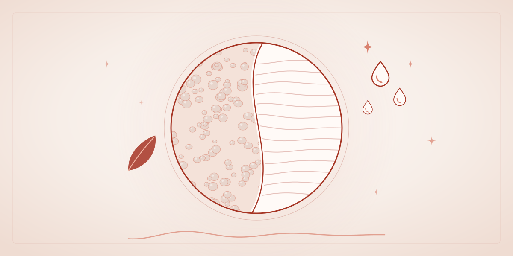
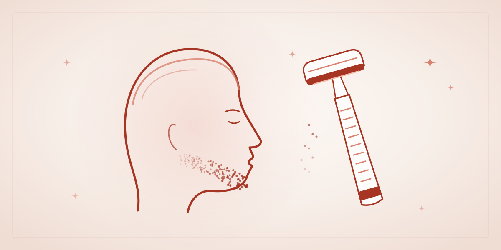

Microneedling, exosomes, PDRN : des mots qui intriguent autant qu'ils intimident. Voici, simplement, ce que contient ce soin, ce qu'il demande et ce qu'on peut raisonnablement en attendre.
Le microneedling à 0,25 mm : l'essentiel
Chez LUMIA, le microneedling est un soin sans aucune injection, réalisé avec un stylo médical à une profondeur de 0,25 mm, en cure de 6 séances espacées de 15 jours. La séance dure 1 heure pour le visage et le cou et coûte 145 €, après un diagnostic visage préalable de 30 minutes à 20 €.
Le principe est simple. Le stylo crée de minuscules micro-perforations contrôlées à la surface de la peau. Ces canaux ne sont pas un but en soi : ils déclenchent la réponse naturelle de régénération de la peau, qui stimule sa production de collagène et d'élastine. C'est pourquoi on parle aussi de micro-stimulation.
Le soin est réalisé par Margaux, infirmière diplômée d'État et esthéticienne. Il est adapté à tous les phototypes, des peaux claires aux peaux foncées, sous réserve des vérifications faites lors du diagnostic.

Réserver mon diagnostic visage (nouvel onglet)
Exosomes et PDRN : de quoi parle-t-on ?
Les actifs appliqués pendant la séance sont de la marque Mesoestetic et contiennent des exosomes et du PDRN. Ces deux mots n'ont rien de magique, mais ils méritent une explication claire.
Le PDRN, pour polydésoxyribonucléotide, est constitué de fragments d'ADN. Les exosomes sont de toutes petites vésicules qui transportent des signaux d'une cellule à l'autre. Ce sont des actifs étudiés pour leur rôle dans la communication entre cellules et dans les mécanismes de régénération de la peau.
Nous restons volontairement prudents : il ne s'agit pas de produits qui « réparent » à coup sûr, et nous ne chiffrons aucun résultat. Le microneedling prépare la peau, les actifs l'accompagnent, et c'est la réponse de votre propre peau qui fait le travail.
Ce que comprend la séance, pas à pas
Tout commence par un diagnostic visage de 30 minutes. Nous discutons de votre projet et de vos préoccupations, nous examinons votre peau et nous définissons ensemble un protocole personnalisé. Le choix des actifs se fait avec vous, selon votre objectif : anti-âge fermeté, anti-âge global, contour des yeux ou dépigmentation.
Avant de commencer, vous signez un questionnaire de santé, un consentement mutuel et une fiche d'information sur le microneedling. Cette étape est obligatoire, et elle permet de vérifier les contre-indications avant le moindre geste. Elle montre aussi le sérieux de la démarche : on ne traite pas la peau à la légère, même à 0,25 mm.
La séance dure ensuite 1 heure et traite le visage et le cou. Il est aussi possible de traiter uniquement le décolleté. La LED est incluse pendant la pose du masque, pour apaiser la peau. La sensation est celle de petits picotements, variable selon la zone, et la profondeur est adaptée à votre peau.
Pour le détail du protocole, des tarifs et des précautions, consultez notre page microneedling à Manosque.
Une cure de 6 séances, et ce qu'on peut en attendre
Le protocole recommandé est une cure de 6 séances, une tous les 15 jours. Des séances d'entretien, environ une fois tous les deux mois, sont ensuite fortement conseillées pour maintenir le bénéfice. C'est un soin de régénération progressif, pas un effet immédiat.
Le microneedling s'adresse aux rides et ridules, au teint terne ou fatigué, au manque d'éclat, au relâchement cutané, aux pores dilatés, à l'excès de sébum et aux cicatrices d'acné. Pour les taches, un actif de dépigmentation peut être choisi ; si elles sont installées, lisez aussi notre article pour comprendre et atténuer les taches du visage.
Aucun résultat n'est garanti : il dépend de votre peau, de votre régularité et de votre protection solaire. Nous préférons vous le dire dès le diagnostic plutôt que promettre l'impossible.
Les précautions à connaître
Aucune exposition au soleil ni aux UV n'est permise dans les 7 jours qui précèdent et les 7 jours qui suivent la séance. Une protection solaire SPF 50+ est obligatoire.
Certaines situations contre-indiquent le soin : grossesse et allaitement, acné inflammatoire, traitement à l'isotrétinoïne, plaies ouvertes, herpès, tatouage sur la zone, anticoagulants, maladies auto-immunes à expression cutanée, antécédents de radiothérapie ou de cancer de moins de cinq ans. Tout est vérifié lors du diagnostic.
Si vous hésitez entre le microneedling et un autre soin, notre guide pour choisir son soin du visage selon sa peau vous aidera à vous orienter.
Questions fréquentes
Le microneedling, est-ce une injection ?
Non. Le stylo médical crée de micro-perforations contrôlées à une profondeur de 0,25 mm, sans aucune injection de produit. Les actifs sont appliqués en surface pendant le soin.
Combien coûte le microneedling à Manosque ?
La séance visage et cou d'une heure coûte 145 €, précédée d'un diagnostic visage de 30 minutes à 20 €. Le protocole recommandé comprend 6 séances, une tous les 15 jours.
Que sont les exosomes et le PDRN ?
Le PDRN est fait de fragments d'ADN, et les exosomes sont de petites vésicules qui transportent des signaux entre cellules. Ce sont des actifs étudiés pour la régénération de la peau. Aucun résultat n'est garanti.
À lire aussi

Cellulite : ce qui marche, ce qui ne marche pas
Crèmes, sport, alimentation, LPG : que peut-on vraiment attendre contre la cellulite ? Un point honnête sur ce qui aide, ce qui ne suffit pas, sans promesse.

Drainage lymphatique et LPG : la cure silhouette
La Cure Expertise Silhouette associe drainage lymphatique et LPG sur 6 séances, avec Emana by Sophie et LUMIA à Manosque. On vous explique son déroulement.

Épilation laser homme : torse, dos, barbe
L'épilation laser n'est pas réservée aux femmes. Torse, dos, épaules, nuque ou contour de barbe : ce que les hommes peuvent traiter et comment ça se passe.